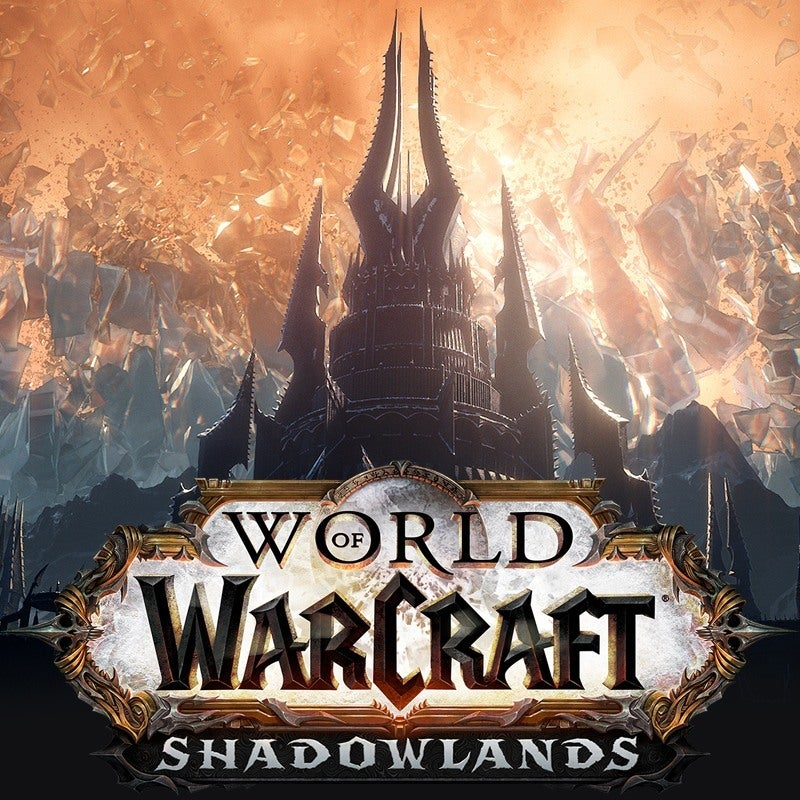

Games
I love playing computer games. I play variety games. From fps games to MMORPG's. The most I play currently are League of Legends, VALORANT, Lost Ark and Wow.



Hello, my name is Ata Budak. Currently I am 20 years old and studying Computer Engineering in Hacettepe University. In this website you can find my personal information and learn more about my life and my accomplishments. Hope you like it :)
Hello, my name is Ata Budak. Currently I am 20 years old and studying Computer Engineering in Hacettepe University. I used to live in Istanbul, but for now, I live in my Univerity's dorm. I am interested in sports, computer games, coding and web development.
From beginning of the end of middle school up to end of high school, I have worked every summer in several places to gain work experience and be productive. Below are the places I worked in my summers.
The company is importing, translating and distributing science and mathematics education toolkits and board games for children. Its web site is www.aklimiseverim.com. In the first two weeks, me and my twin brother helped the company to move to a different address by packing, carrying and reorganizing all office materials including books and education toolkits We translated the toolkits and board games from English to Turkish. We shot marketing videos explaining how to play and use these toolkits. Videos are available on YouTube at Aklimi Severim Channel.
The company is manufacturing gold bracelets and wedding rings. There are 8 workers at the workshop and 6 salespersons at the wholesale shop. I and my brother worked at the workshop.
In the first two days we observed the artisans and the process of gold bars turning into bracelets.
Then we helped with;
o Melting gold at more than 1.000 OC,
o Moulding process,
o Production of gold sheets and wires.
We polished the end products to be ready for display at the wholesale shop or to be sent to retailers.
We carried gold and bracelets between the workshop and the wholesale shop.
It is a men’s barber shop with three partners.
My responsibilities were;
o Cleaning the shop; floors, mirrors and the sinks.
o Greeting the clients; helping them take off and put on jackets.
o Helping the barber while he is shaving or haircutting clients.
o Shopping for lunch, serving tea, coffee and drinks to clients.
The sports I have taken interest in are Chess and Table tennis. I used to play chess when I was little and quit it after middle school to start table tennis. I used to be a professional table tennis player and I have won several awards in many tournaments. Below is the list of awards I have won.
I love playing computer games. I play variety games. From fps games to MMORPG's. The most I play currently are League of Legends, VALORANT, Lost Ark and Wow.